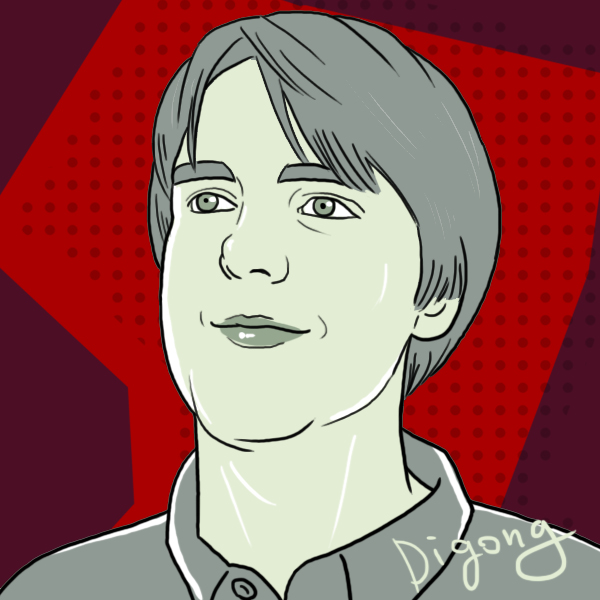

I'm a user experience designer based in Los Angeles, California, with a background in writing and comedy. I apply my skills in interactive storytelling, ideation, wireframing, prototyping, testing, and design thinking across a variety of projects, particularly in the digital entertainment sphere.
I bring an agile mind and a sense of humor to the serious challenges we need to tackle as a species, and I believe in the power of entertainment to bring people together. Watching the internet develop right now feels like living in Hollywood's golden age - every day opens new avenues of expression and new applications for designers' tools and wherewithal.
Software programs I have known: Omnigraffle, balsamiq, Axure, draw.io, POP, InVision, Adobe Creative Suite, Mac and Windows environments.
Obsessions: Mind-expanding games, Easter Eggs, high weirdness and delight.
Please contact me through About.Me or LinkedIn!
